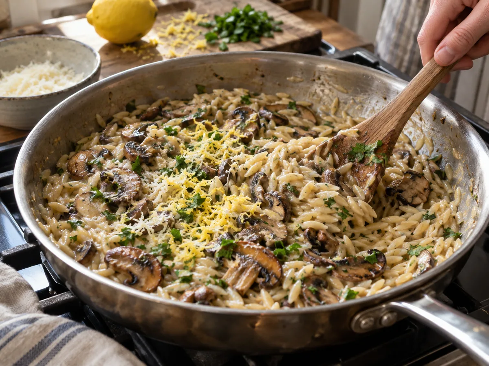

The secret to creamy orzo is not cream. It is the same quiet trick that makes risotto feel luxurious: let starch, stock, and fat meet gradually, then stop cooking while the pasta still has a little movement. Mushrooms complicate that simple idea because they carry so much water. Brown them carelessly and the pan fills with gray liquid; rush the orzo and dinner becomes either soupy or stodgy. This version handles those two problems separately, then brings everything together in one pan.
A short ingredient list with clear jobs
Use 12 ounces of cremini or button mushrooms, sliced about a quarter-inch thick; 1 small yellow onion, finely chopped; 3 garlic cloves; 1½ cups dry orzo; 4 cups low-sodium vegetable or chicken stock; ½ cup finely grated Parmesan; 1 lemon; 2 tablespoons butter; 2 tablespoons olive oil; and a loose half cup of parsley, dill, or a mixture. Salt and black pepper do the remaining work.
The mushrooms provide savoriness, but their texture matters as much as their flavor. Slices that are too thin shrivel before they brown. Thick pieces remain pleasantly meaty and give the soft pasta something to push against. Cremini mushrooms have a deeper flavor than white buttons, although either is dependable. A small handful of dried porcini, soaked and chopped, can deepen the sauce; strain their soaking liquid and count it as part of the stock.
Choose real Parmesan and grate it finely. Pre-shredded cheese often carries starches that slow melting and can leave the sauce slightly dusty. The lemon does two jobs: zest adds fragrance, while juice sharpens a dish that would otherwise be all bass notes. If the stock is already salty, wait until the final minutes to season decisively.
Brown the mushrooms before anything gets crowded
Heat the skillet over medium-high until a drop of water skitters across it. Add one tablespoon of olive oil, then half the mushrooms. Spread them into one layer and leave them alone for two minutes. The stillness is important: mushrooms brown where they maintain contact with hot metal. Stirring constantly cools the pan and encourages them to release water before color develops.
Turn the slices, season with a small pinch of salt, and cook until the second side is bronze. Transfer them to a plate and repeat with the remaining mushrooms and oil. Two batches can feel fussy, but it takes less time than waiting for an overcrowded pan to boil itself dry. Set aside a few of the best-looking pieces for the top; the rest will return to the orzo.
Treat the orzo like pasta, not like tiny rice
Lower the heat to medium. Add one tablespoon of butter and the onion to the same skillet. Cook for four to five minutes, scraping up the mushroom fond as the onion softens. Add the garlic and stir for thirty seconds. The garlic should smell sweet, not toasted.
Pour in the dry orzo and stir for about a minute. Toasting does not seal the pasta—nothing needs sealing—but it coats the grains in the seasoned fat and gives the finished dish a faint nutty edge. Add three cups of warm stock, bring the pan to a lively simmer, then reduce the heat enough to keep small bubbles moving across the surface.
Stir every minute or so, especially around the corners where pasta settles. Unlike risotto, orzo does not need constant attention. Too much stirring can scrape the pasta and make the sauce gummy. Add the remaining stock in splashes when the skillet looks dry before the orzo is tender. Depending on the brand and pan, the pasta will take nine to twelve minutes.
Return most of the mushrooms when the orzo is nearly al dente. They have already done their browning; now they only need to warm through and lend their juices to the sauce. Stop adding liquid when the pasta is tender but still has a defined center and the pan looks slightly looser than the result you want. It will thicken while you finish it.

The off-heat finish is where creaminess appears
Remove the skillet from the burner. Add the remaining tablespoon of butter, half the Parmesan, the zest of the lemon, and two teaspoons of lemon juice. Stir firmly for twenty seconds. The butter and cheese emulsify with the starchy cooking liquid, turning what looked like loose broth into a sauce that clings. Fold in most of the herbs and taste.
If the orzo stands like mashed potatoes, loosen it with two tablespoons of warm stock or water. If it flows like soup, let it rest for two minutes before changing anything; the pasta continues absorbing liquid. Add more lemon juice only after tasting with a mushroom in the same bite. The goal is brightness rather than an obviously lemony pasta.
Spoon the orzo into warm shallow bowls and add the reserved mushrooms, herbs, Parmesan, and black pepper. Serve immediately. This is not a dish that improves by waiting under a lid: trapped steam dulls the herbs and the pasta drinks the sauce.
Three variations that change the character, not the method
Greens and peas
Fold in two handfuls of baby spinach during the last minute, or add frozen peas with the returning mushrooms. Both bring color and sweetness without changing the liquid ratio much.
Without dairy
Use olive oil in place of butter and finish with a spoonful of white miso whisked into warm stock. It will not mimic Parmesan exactly, but it supplies salt, body, and savoriness.
For a more autumnal version, replace the lemon with a teaspoon of sherry vinegar and use thyme instead of parsley. For extra protein, top each bowl with a softly fried egg or serve the orzo beside roast chicken. Avoid cooking raw chicken pieces in the same pan from the beginning: they release liquid and make proper mushroom browning much harder.
Leftovers need a different expectation
Refrigerated orzo firms as its starches settle. Store it in a shallow airtight container for up to three days. Reheat gently in a skillet with a splash of stock or water, stirring only until the sauce relaxes. A microwave works, but use short intervals and cover the bowl loosely so the edges do not dry before the center warms.
The next day, the pasta will be softer and the sauce less silky, yet the flavor remains good. Turn a small portion into lunch by adding arugula, roasted vegetables, and a squeeze of lemon. If you know you are cooking for leftovers, hold back a portion of the mushrooms and fresh herbs; adding them after reheating restores contrast.
What usually goes wrong
- Pale mushrooms: the pan was crowded or not hot enough. Brown in batches.
- Crunchy orzo with no liquid left: add hot stock a quarter cup at a time and keep simmering.
- Greasy sauce: the pan was too hot when butter and cheese went in. Pull it off the heat and stir in a spoonful of water.
- Flat flavor: add acid before more salt. A little lemon often wakes up the mushrooms better than another pinch of seasoning.
A few practical questions
Can I use another small pasta?
Yes, but cooking time and liquid needs will change. Ditalini and small shells work; begin with three cups of stock and add more as needed. Larger shapes are harder to cook evenly in a shallow skillet.
Do I need to wash mushrooms?
Brief rinsing is fine if they are visibly dirty. Dry them thoroughly before slicing. What hurts browning is surface water entering the hot pan, not the few seconds a mushroom spends under the tap.
Can I make it ahead for guests?
Prepare the mushrooms and chop the aromatics ahead, but cook the orzo close to serving. If necessary, stop while it is slightly firm and loose, then rewarm with stock and complete the off-heat finish.